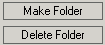
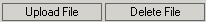
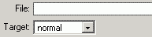

You can create links to files stored on the remote server. After you press on the "Browse for File" button displayed in the Link Inspector panel, KTML opens a pop-up window very similar to the one used for inserting images. The window is composed of three panels:
- the left panel, which displays the tree structure of the upload
folder, and has two buttons: Make Folder, Delete
Folder;

- the right panel, which displays the contents of the current folder
(the one selected from the tree) and has two buttons: Upload
File,
Delete File;

- the bottom panel, which helps you configure the link.

The file navigator will display only the supported file types: bmp, gif, jpeg, jpg, png, pdf, doc, rtf, txt, mp3, mpg, mpeg, avi, wav, mov, qt, rm.
The File Navigator behavior is similar to the one used to upload images. You can navigate through the folder structure, create/delete folders, upload/delete/ files. For a selected file, you must choose the target window.